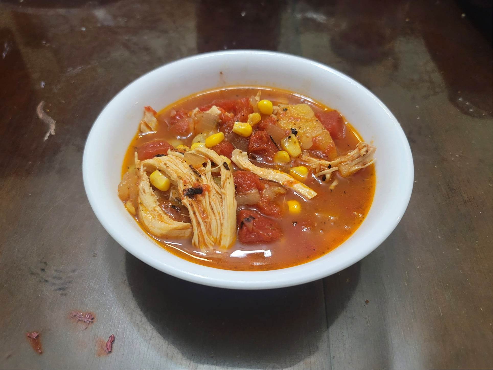

Brunswick Stew

Ingredients:
- 2 lb Chicken thighs, boneless, skinless
- 1-2 tbsp Olive oil
- 2 Yellow onions, diced
- Salt, to taste
- Black pepper, to taste
- 4 Bay leaves
- 4 tsp Celery seeds
- 1/4 - 1/2 tsp Cayenne pepper
- 3 lb Tomatoes, diced OR 3 lb can Diced tomatoes
- 3 tbsp Worcestershire sauce
- 4 tsp Sugar
- 1 lb Gold potatoes, peeled, 2" cubed
- 1 quart Chicken stock
- 2 cups fresh or frozen Corn kernels
- 2 cups fresh or frozen Lima beans
Instructions:
- Heat the olive oil in a large pot over medium-high heat. Add the onion and season with salt and pepper to taste. Sauté until starting to brown, 12-15 minutes. Then stir in the bay leaves, celery seeds, and cayenne. Sauté until fragrant, about 30 seconds.
- Then throw in the tomatoes, Worcestershire sauce, and sugar. Sauté until tomatoes are softened and releasing liquid, 7-9 minutes.
- Add in the potatoes and chicken stock. Bring to a boil and reduce to a simmer. Cook, covered, for about 1 hour.
- Take some of the potatoes and place into a bowl with some broth. Mash and then stir back into the soup. Repeat until the soup has thickened to preference.
- Add in the chicken, corn, and lima beans. Cover and let simmer for another hour.
- Remove the chicken from the pot and shred with forks. Return to the pot. Taste for seasoning and adjust as desired. Serve immediately.